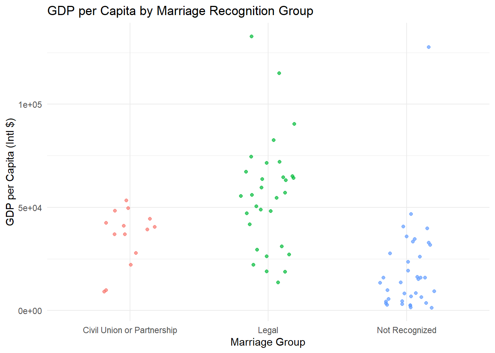

library(tidyverse)
library(patchwork)
library(knitr)
library(car)
library(FSA)
library(PMCMRplus)Global Rights Data
About the Data
This dataset provides yearly, country-level information on LGBTQ+ rights, economic indicators, and education spending. The data is compiled from Our World in Data, with primary sources including Equaldex, the World Bank, and other open-access datasets.
Download
Metadata
DOI
TBD
CSV Name
globalrights.csv
Dataset Characteristics
Multivariate, Panel (Country-Year)
Subject Area
Human Rights, Public Policy, International Development
Associated Tasks
Classification, Regression, Comparative Analysis
Feature Type
Categorical, Float, Integer
Instances
2,184 country-year observations (91 countries × 24 years)
Features
10
Has Missing Values?
Yes
Variables
| Variable Name | Role | Type | Description | Units | Missing Values |
|---|---|---|---|---|---|
year |
ID | Integer | Year the data was recorded | Year | No |
country |
ID | String | Country name | - | No |
country-code |
ID | String | ISO 3-letter country code | - | No |
gdp-per-capita |
Feature | Float | Gross Domestic Product per capita | International $ | Yes |
education-spending-gdp |
Feature | Float | Government education spending as a percentage of GDP | % | Yes |
same-sex-marriage |
Target | Categorical | Legal status of same-sex marriage (e.g., Legal, Civil Union, Not Recognized) | - | No |
lgbtq-censorship |
Feature | Categorical | Whether LGBTQ+ content is censored or restricted | - | Yes |
employment-discrimination |
Feature | Categorical | Whether anti-discrimination protections exist for LGBTQ+ individuals in employment | - | Yes |
gender-affirming-care |
Feature | Categorical | Availability and legal access to gender-affirming healthcare | - | Yes |
legal-gender |
Feature | Categorical | Whether legal gender can be changed and under what conditions (e.g., self-ID, medical req.) | - | Yes |
Please Note: This analysis is still in progress.
Key Features of the Dataset
Each row represents a single country’s record for a specific year and includes information such as GDP per capita, education spending, and the legal status of various LGBTQ+ rights and protections.
year: Year of observationcountry,country-code: Country name and ISO codegdp-per-capita: GDP per capita (constant international-$)education-spending-gdp: Government expenditure on education (% of GDP)same-sex-marriage: Legal status of same-sex marriagelgbtq-censorship: Whether LGBTQ+ topics are censoredemployment-discrimination: Laws against discrimination in employmentgender-affirming-care: Legal and medical access to gender-affirming carelegal-gender: Rights around legal gender marker change
Purpose and Use Cases
This dataset is designed to support analysis of:
Global trends in LGBTQ+ rights over time
Associations between legal protections and economic or educational indicators
Regional disparities in access to gender-affirming care and anti-discrimination laws
The relationship between policy environments and broader measures of social inclusion
Temporal changes in legal recognition of same-sex marriage and gender identity
It enables cross-country comparisons and longitudinal studies using harmonized data from trusted open-access sources.
Case Study
Objective
Do countries with different levels of legal recognition for same-sex marriage also differ in terms of their economic development?
This case study explores whether there are statistically significant differences in GDP per capita across countries grouped by their legal recognition of same-sex marriage:
- Legal (full marriage equality)
- Civil union or other partnership
- Not Recognized
Rather than implying causality, we use a one-way ANOVA (or an appropriate alternative based on assumption checks) to examine whether the average level of economic development differs significantly across these legal categories.
To do this, we apply one one-way ANOVA test (or an appropriate alternative test) to address the following question:
- Does marriage recognition status relate to national wealth?
Tested using GDP per capita as the response variable.
Analysis
Loading Libraries
1. Data Cleaning & Processing
Dropped countries with missing values for key variables (
gdp-per-capita,education-spending-gdp,same-sex-marriage)Converted text fields into consistent categories (e.g., combining “Unrecognized” and “Banned” into one group)
Created a new factor variable:
marriage_group. Based on our analytical goal which is comparing countries that formally recognize, partially recognize, or do not recognize same-sex unions at all. We created these three different levels formarriage_groupfiled.Filtered the dataset to include only one year per country to ensure independent observations across time
global_rights <- read_csv("../../data/clean/globalrights.csv")
# Get the last year overall in the dataset
last_year <- max(global_rights$year, na.rm = TRUE)
## map each of the levels in same sex marriage
## into one of three standardized categories for analysis
cleaned_df <- global_rights |>
filter(
year == last_year,
!is.na(`same-sex-marriage`),
!is.na(`gdp-per-capita`)
) |>
mutate(marriage_group = case_when(
`same-sex-marriage` %in% c(
"Legal",
"Foreign same-sex marriages recognized only"
) ~ "Legal",
`same-sex-marriage` %in% c(
"Civil union or other partnership",
"Unregistered cohabitation"
) ~ "Civil Union or Partnership",
`same-sex-marriage` %in% c(
"Banned",
"Unrecognized",
"Varies by region"
) ~ "Not Recognized",
TRUE ~ "Other"
))
message("The dataset is filtered to the last year overall: ", last_year)2. Exploratory Data Analysis (EDA)
ggplot(cleaned_df, aes(x = marriage_group, y = `gdp-per-capita`, color = marriage_group)) +
geom_jitter(width = 0.2, alpha = 0.7) +
labs(
title = "GDP per Capita by Marriage Recognition Group",
x = "Marriage Group",
y = "GDP per Capita (Intl $)"
) +
theme_minimal() +
theme(legend.position = "none")
Boxplot of GDP per Capita/Education Spending by Marriage Group
This shows the distribution of GDP per capita/Education Spending for each group of countries based on how they recognize same-sex marriage. It helps identify differences in economic and education spending status across the three groups.
# GDP per capita
gdp_plot <- ggplot(cleaned_df, aes(x = marriage_group, y = `gdp-per-capita`)) +
geom_boxplot() +
labs(
title = "GDP per Capita by Same-Sex Marriage Status",
x = "Marriage Group",
y = "GDP per Capita (Intl $)"
) +
theme_minimal()
(gdp_plot)The exploratory data analysis reveals that countries recognizing same-sex marriage (either fully or through civil unions) tend to have similar GDP per capita distributions, with overlapping interquartile ranges. In contrast, countries that do not recognize same-sex marriage show noticeably lower GDP per capita and exhibit no overlap with the other two groups, along with a higher number of outliers, indicating greater variability. For education spending, the distributions across all three groups are much closer, with less pronounced differences. While the Not Recognized group again shows some outliers, they are fewer compared to the GDP per capita distribution. This suggests that while economic wealth varies more strongly with legal recognition status, education investment appears relatively stable across groups.
Histogram of GDP per Capita (All Countries)
These plots show the overall distributions of GDP per capita and education spending (% of GDP) across countries in the dataset. They allow us to assess the shape of each variable’s distribution
# Histogram for GDP per Capita
hist_gdp <- ggplot(cleaned_df, aes(x = `gdp-per-capita`)) +
geom_histogram(bins = 30, fill = "skyblue", color = "white") +
labs(
title = "Distribution of GDP per Capita",
x = "GDP per Capita (Intl $)",
y = "Count of Countries"
) +
theme_minimal()
hist_gdp From the histograms, we observe that GDP per capita is right-skewed, indicating that most countries have relatively low to moderate GDP levels, with a smaller number of countries exhibiting much higher GDP per capita. This suggests economic wealth is concentrated in a few high-income countries.
3. Aim and hypotheses of ANOVA
To examine whether economic indicators differ across countries based on their legal recognition of same-sex marriage, we conduct two one-way ANOVA tests. Each test evaluates whether the mean value of a numeric variable varies significantly across the three legal categories: Legal, Civil Union, and Not Recognized.
1. ANOVA for GDP per Capita
We test whether countries with different legal recognition statuses have significantly different mean GDP per capita.
Null Hypothesis (H₀):
\[ \mu_{\text{GDP}}(\text{Legal}) = \mu_{\text{GDP}}(\text{Civil Union}) = \mu_{\text{GDP}}(\text{Not Recognized}) \]Alternative Hypothesis (Hₐ):
\[ \text{At least one pair of group means for GDP per capita is different.} \]
These tests help determine whether economic wealth or public investment in education is associated with how countries legally recognize same-sex marriage.
4. Underlying assumptions of ANOVA
1. Independence of Observations
- Observations within and across groups must be independent.
- In our case, this means that each country-year observation is independent of others.
- This assumption is typically satisfied by the design of the dataset if no country appears more than once per year and data points are not clustered.
- Please note that dataset includes only one year per country to ensure independent observations across time
duplicates <- cleaned_df |>
count(country, year, name = "count") |>
filter(count > 1) |>
arrange(desc(count), country, year)
if (nrow(duplicates) == 0) {
print("No duplicate country-year combinations found. Independence assumption is satisfied.")
} else {
print("Some countries appear more than once in the same year. See the table below:")
duplicates |>
rename(
`Country` = country,
`Year` = year,
`Number of Entries` = count
) |>
kable(
caption = "Duplicate Country-Year Combinations",
align = "lcc"
)
}[1] "No duplicate country-year combinations found. Independence assumption is satisfied."2. Normality of Residuals
- The residuals within each group (i.e., within Legal, Civil Union, and Not Recognized) should be approximately normally distributed.
- We will assess this assumption using:
- Histogram or Q-Q plots of the residuals
- Shapiro-Wilk test for normality within each group
# GDP per capita - residuals within groups
gdp_residuals <- cleaned_df |>
group_by(marriage_group) |>
mutate(gdp_resid = `gdp-per-capita` - mean(`gdp-per-capita`, na.rm = TRUE)) |>
ungroup()Q-Q Plots for GDP Residuals
ggplot(gdp_residuals, aes(sample = gdp_resid)) +
stat_qq(color = "skyblue") +
stat_qq_line(color = "black") +
facet_wrap(~marriage_group) +
labs(
title = "Q-Q Plot of GDP per Capita Residuals",
x = "Theoretical Quantiles",
y = "Sample Quantiles"
) +
theme_minimal()Shapiro-Wilk Test for Normality (All Groups)
# GDP residuals by group
gdp_shapiro <- gdp_residuals |>
group_by(marriage_group) |>
summarise(
p_value = shapiro.test(gdp_resid)$p.value,
.groups = "drop"
) |>
rename(`Group` = marriage_group, `GDP Residuals p-value` = p_value)
knitr::kable(
gdp_shapiro,
caption = "Shapiro-Wilk Test Results for Normality of GDP Residuals"
)| Group | GDP Residuals p-value |
|---|---|
| Civil Union or Partnership | 0.0733833 |
| Legal | 0.0726414 |
| Not Recognized | 0.0000001 |
For GDP per capita, the Q-Q plot shows a clear deviation from the 45-degree line in the Not Recognized group, indicating that the residuals are not normally distributed. This is confirmed by the Shapiro-Wilk test, which returns p-values below 0.001 for all three marriage groups, leading us to reject the assumption of normality. As a result, the normality assumption for ANOVA is not satisfied for GDP per capita, and alternative approaches such as a log transformation, Welch’s ANOVA, or the Kruskal–Wallis test may be more appropriate.
3. Homogeneity of Variances (Homoscedasticity)
- The variance of the response variable should be similar across all groups.
- We will check this using:
- Levene’s Test or Bartlett’s Test for equality of variances
- Visual inspection via boxplots for any substantial differences in spread
Levene’s and Bartlett’s Test for GDP per Capita
# GDP per capita
gdp_levene <- leveneTest(`gdp-per-capita` ~ marriage_group, data = cleaned_df)
gdp_bartlett <- bartlett.test(`gdp-per-capita` ~ marriage_group, data = cleaned_df)The Results
homogeneity_results <- tibble::tibble(
Variable = c("GDP per Capita", "GDP per Capita"),
Test = c("Levene's Test", "Bartlett's Test"),
`Test Statistic` = c(
gdp_levene$`F value`[1],
gdp_bartlett$statistic
),
`p-value` = c(
gdp_levene$`Pr(>F)`[1],
gdp_bartlett$p.value
)
)
knitr::kable(
homogeneity_results,
caption = "Homogeneity of Variances for GDP per Capita: Levene’s and Bartlett’s Tests",
digits = 4
)| Variable | Test | Test Statistic | p-value |
|---|---|---|---|
| GDP per Capita | Levene’s Test | 1.8638 | 0.1618 |
| GDP per Capita | Bartlett’s Test | 6.5058 | 0.0387 |
For GDP per capita, Levene’s test suggests that the assumption of equal variances is not violated (p = 0.1618), while Bartlett’s test indicates a violation (p = 0.0387). Since Bartlett’s test is more sensitive to deviations from normality, and the two tests disagree, caution should be used when interpreting the homogeneity of variances assumption for this variable.
5. Data Transformation (Log Scale)
We applied a log transformation to GDP per capita and education spending to address violations of ANOVA assumptions. This transformation helps reduce right skewness and stabilize variance across groups, making the data more suitable for parametric tests like Welch’s ANOVA.
cleaned_df <- cleaned_df |>
mutate(
log_gdp = log(`gdp-per-capita`),
log_edu = log(`education-spending-gdp`)
)ggplot(cleaned_df, aes(sample = log_gdp)) +
stat_qq(color = "skyblue") +
stat_qq_line(color = "black") +
facet_wrap(~marriage_group) +
labs(
title = "Q-Q Plot of Log(GDP per Capita) Residuals by Group",
x = "Theoretical Quantiles",
y = "Sample Quantiles"
) +
theme_minimal()Shapiro-Wilk Test for Normality (All Groups) after Log Scale
gdp_shapiro_log <- cleaned_df |>
group_by(marriage_group) |>
summarise(
p_value = shapiro.test(log_gdp)$p.value,
.groups = "drop"
) |>
rename(`Group` = marriage_group, `log(GDP) p-value` = p_value)
knitr::kable(
gdp_shapiro_log,
caption = "Shapiro-Wilk Test Results for Normality of Log-Transformed GDP per Capita"
)| Group | log(GDP) p-value |
|---|---|
| Civil Union or Partnership | 0.0014443 |
| Legal | 0.0850579 |
| Not Recognized | 0.4244092 |
levene_log_gdp <- leveneTest(log_gdp ~ marriage_group, data = cleaned_df)
bartlett_log_gdp <- bartlett.test(log_gdp ~ marriage_group, data = cleaned_df)
log_gdp_variance_tests <- tibble::tibble(
Variable = c("Log GDP per Capita", "Log GDP per Capita"),
Test = c("Levene’s Test", "Bartlett’s Test"),
`Test Statistic` = c(
levene_log_gdp$`F value`[1],
bartlett_log_gdp$statistic
),
`p-value` = c(
levene_log_gdp$`Pr(>F)`[1],
bartlett_log_gdp$p.value
)
)
knitr::kable(
log_gdp_variance_tests,
caption = "Homogeneity of Variances for Log GDP per Capita: Levene’s and Bartlett’s Tests",
digits = 4
)| Variable | Test | Test Statistic | p-value |
|---|---|---|---|
| Log GDP per Capita | Levene’s Test | 9.7838 | 2e-04 |
| Log GDP per Capita | Bartlett’s Test | 17.4628 | 2e-04 |
Even after applying the log transformation, both Levene’s test (p = 0.0002) and Bartlett’s test (p = 0.0002) for log GDP per capita return very small p-values. This indicates that the assumption of equal variances is still violated.
Therefore, standard ANOVA remains inappropriate for analyzing differences in log GDP per capita across groups, and a more robust alternative should be considered.
6. Alternative Approaches to ANOVA
1. GDP per Capita: Kruskal–Wallis Test
Since the assumptions of normality and homogeneity of variances were both violated for GDP per capita, we applied the Kruskal–Wallis test, a non-parametric alternative to one-way ANOVA.
This test compares the distributions of the response variable across groups, rather than their means, and does not require normality or equal variances.
We chose this test because it is robust and appropriate when ANOVA assumptions are not met, particularly in the presence of skewed data and unequal variances.
gdp_kw <- kruskal.test(`gdp-per-capita` ~ marriage_group, data = cleaned_df)And this is our final result :
final_gdp_test_result <- tibble::tibble(
Variable = "GDP per Capita",
Test = "Kruskal–Wallis",
`Test Statistic` = gdp_kw$statistic,
`p-value` = gdp_kw$p.value
)
knitr::kable(
final_gdp_test_result,
caption = "Final Test Result for GDP per Capita: Kruskal–Wallis Test",
digits = 4,
align = "lcc"
)| Variable | Test | Test Statistic | p-value |
|---|---|---|---|
| GDP per Capita | Kruskal–Wallis | 37.6841 | 0 |
For GDP per capita, the Kruskal–Wallis test returned a large test statistic (37.6841) with a p-value of 0, indicating a statistically significant difference in distributions across the three marriage recognition groups.
Since the Kruskal–Wallis test does not require normality or equal variances, this result provides strong evidence that at least one group differs in GDP distribution. This supports the conclusion that GDP per capita is associated with the legal recognition of same-sex marriage across countries.
7. Post-hoc Tests
While our main tests (Kruskal–Wallis for GDP per capita and Welch’s ANOVA for education spending) showed that there are statistically significant differences across the marriage recognition groups, they do not specify which specific group pairs differ from each other. To gain a clearer understanding of where these differences lie such as whether countries recognizing same-sex marriage differ significantly from those offering only civil unions or no recognition we conducted post-hoc test.
1. Post-hoc Test for GDP per Capita
Since we used the Kruskal–Wallis test (a non-parametric method) for GDP per capita, we followed it with Dunn’s test for post-hoc comparisons. The Kruskal–Wallis test tells us whether there’s a difference in distributions among the groups, but it does not tell us which pairs of groups differ. Dunn’s test fills that gap. What is Dunn’s Test? Dunn’s test performs pairwise comparisons between all levels of the grouping variable (in this case, marriage_group) using ranked data.
gdp_posthoc <- dunnTest(`gdp-per-capita` ~ marriage_group, data = cleaned_df, method = "bonferroni")
gdp_posthoc$res |>
mutate(p.adj = round(P.adj, 4)) |>
select(Comparison, `Z Statistic` = Z, `p-value` = p.adj) |>
kable(
caption = "Dunn’s Post-hoc Test for GDP per Capita (Bonferroni Correction)",
align = "lcc",
digits = 4
)| Comparison | Z Statistic | p-value |
|---|---|---|
| Civil Union or Partnership - Legal | -1.8689 | 0.1849 |
| Civil Union or Partnership - Not Recognized | 2.8144 | 0.0147 |
| Legal - Not Recognized | 6.0984 | 0.0000 |
Dunn’s post-hoc test shows a significant difference in GDP per capita between countries that do not recognize same-sex marriage and those that do, either through legal marriage or civil unions. However, there is no significant difference between countries offering legal marriage and those offering civil unions, suggesting the economic gap lies primarily between recognition and non-recognition.
Discussion
Countries that differ in their legal recognition of same-sex marriage also show significant differences in GDP per capita. Initial ANOVA assumption checks revealed clear violations of normality and homogeneity of variances for this variable. Even after applying a log transformation, these issues persisted, making standard ANOVA inappropriate.
As a result, we used the Kruskal–Wallis test, a non-parametric alternative that does not assume normality or equal variances. The test revealed highly significant group-level differences. Post-hoc analysis showed that countries not recognizing same-sex marriage have significantly lower GDP per capita than those offering civil unions or legal marriage, while no significant difference was found between the latter two.
These findings suggest a strong association between economic development and the legal recognition of same-sex marriage, with more economically developed countries being more likely to adopt inclusive legal frameworks.
Attribution
This analysis uses data compiled and curated from Our World in Data, an open-access initiative that aggregates global development indicators. The variables used in this analysis include economic and policy-related measures across 91 countries from 2000 to 2023.
Data sources include:
- GDP per Capita: Our World in Data – Economic Growth
- Education Spending (% of GDP): Our World in Data – Education Expenditure
- LGBTQ+ Rights Indicators:
All data is used under the terms of the Creative Commons BY license. Please refer to Our World in Data – Licensing for more details.
Citation:
Our World in Data. Various datasets compiled and maintained by the Global Change Data Lab.
https://ourworldindata.org